The robot · Chapter 6
Import the Go2
| Goal | Know which files describe the Go2, look at it in RViz, change a copy of its URDF, and check that every name CHAMP and ros2_control need is spelled the same everywhere. |
| Time | 2 h |
| Before you start | Chapter 3 built the workspace; chapter 5 covered TF and view_frames. A desktop session for RViz. |
| You will learn | how the xacro is assembled; how to open the shared RViz config go2.rviz; joint limits; visual and collision geometry; how to add a link; which names must match between the URDF, ros_control.yaml and the CHAMP maps. |
The Go2 model and its gait controller are not part of this repository. scripts/setup.sh fetches
anujjain-dev/unitree-go2-ros2 at commit
fdac259518930c8f03e79189c4d0fdd00fc47483 into src/third_party/unitree-go2-ros2 and applies patches/upstream.patch. The
patch touches only two CHAMP launch files. Every command below runs from the repository root after source env.sh.
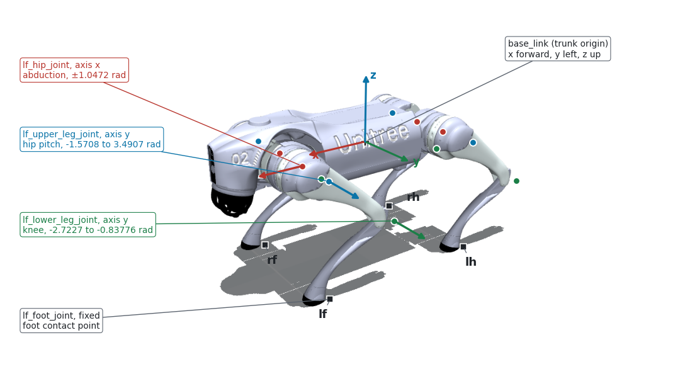
MuJoCo Menagerie Go2 (modules/assets/unitree_go2, home pose) labelled with this stack's URDF names; its leg offsets are the ones in const.xacro. Red dots: hip joints (axis x), blue: upper leg (axis y), green: lower leg (axis y), black squares: foot points. Limits from the expanded URDF.
Task 1: Find the files and render the URDF
1.1 Locate what upstream provides
Objective: know which file holds what before you change anything.
Path under src/third_party/unitree-go2-ros2 |
Contents |
|---|---|
robots/descriptions/go2_description/xacro/ |
robot.xacro (entry point), leg.xacro, const.xacro, gazebo.xacro, materials.xacro, and unused variants (robot_VLP.xacro, velodyne.xacro, laser.xacro, transmission.xacro) |
robots/descriptions/go2_description/meshes/ |
Collada visuals: trunk.dae, hip.dae, thigh.dae, thigh_mirror.dae, calf.dae; calf_mirror.dae, foot.dae and hokuyo.dae are not referenced by robot.xacro |
robots/descriptions/go2_description/config/ros_control/ros_control.yaml |
controller manager and controller parameters |
robots/configs/go2_config/config/joints/joints.yaml |
CHAMP joint map |
robots/configs/go2_config/config/links/links.yaml |
CHAMP link map |
robots/configs/go2_config/config/gait/gait.yaml |
CHAMP gait parameters (chapter 7) |
champ/champ_bringup/launch/bringup.launch.py |
robot_state_publisher, CHAMP controller and state estimator, two EKFs |
champ/champ_gazebo/launch/gazebo.launch.py |
gzserver, spawning, controller loading |
go2_config also has its own launch/gazebo.launch.py and bringup.launch.py for upstream's demo. This repository does not
use them. It includes the two CHAMP launch files directly and passes the Go2 paths in.
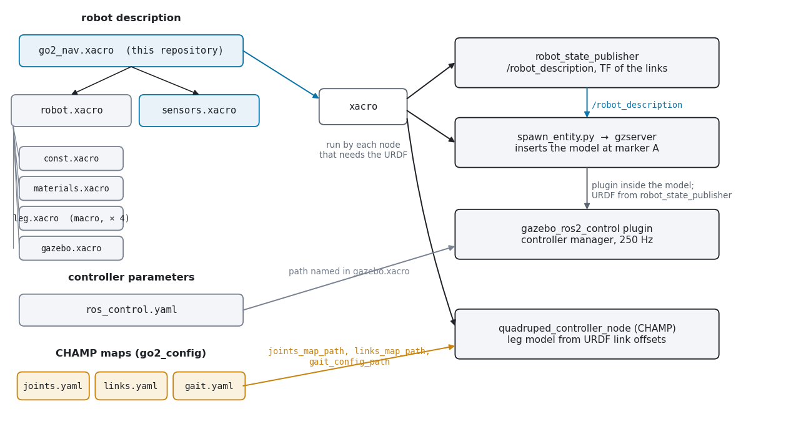
Which process reads which file. Every node that needs the URDF runs xacro on go2_nav.xacro itself; the controller YAML is found through the path in gazebo.xacro, and the three maps through sim.launch.py.
Check: ls src/third_party/unitree-go2-ros2/robots/configs/go2_config/config/ lists gait, joints and links among its folders.
1.2 Read how the xacro is assembled
Objective: know where each link and joint comes from.
src/go2_nav_sim/urdf/go2_nav.xacro includes upstream's robot.xacro and this repository's sensors.xacro. robot.xacro
includes const.xacro, materials.xacro, leg.xacro and gazebo.xacro. It defines base_link, a fixed joint named
floating_base to trunk (the trunk mesh, a 0.376 × 0.094 × 0.114 m collision box and 6.921 kg), and imu_link at the trunk
origin. It then calls the leg macro four times:
<xacro:leg name="rf" mirror="-1" mirror_dae= "False" front_hind="1" front_hind_dae="True" />
<xacro:leg name="lf" mirror="1" mirror_dae="True" front_hind="1" front_hind_dae="True" />
mirror flips y offsets and inertia products for the right side, front_hind flips x for the hind legs, and the two _dae
flags choose the mesh and its orientation. leg.xacro creates <name>_hip_joint (axis x, at ±0.1934, ±0.0465 m from the trunk
centre), <name>_upper_leg_joint (axis y, 0.0955 m outward), <name>_lower_leg_joint (axis y, 0.213 m below) and a fixed
<name>_foot_joint another 0.213 m below. All dimensions, joint limits, masses and inertias live in const.xacro.
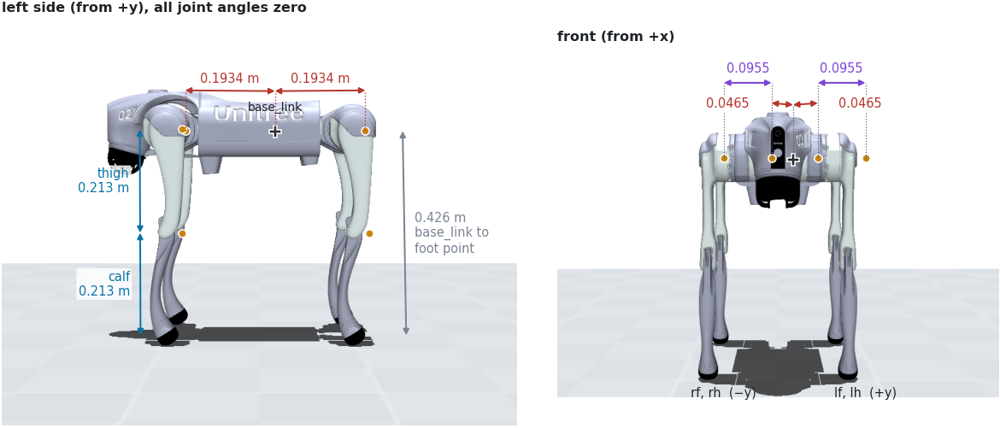
The offsets above drawn between joint origins, all joint angles zero (outside the knee limit, posed only to show the lengths). With straight legs the foot point is 0.213 + 0.213 = 0.426 m below base_link.
gazebo.xacro adds the libgazebo_ros2_control.so plugin, pointed at
$(find go2_description)/config/ros_control/ros_control.yaml, an IMU on imu_link publishing /imu/data
(chapter 8), and friction 0.6 on the feet and 0.2 on the other links. go2_nav.xacro attaches a lidar, an RGB-D camera, a chase camera and the ground-truth plugin to base_link with fixed joints
(chapter 8), and takes start_x and start_y so that /odom_gt starts at zero.
Check: grep -c "xacro:leg " src/third_party/unitree-go2-ros2/robots/descriptions/go2_description/xacro/robot.xacro prints 4.
1.3 Render the model without starting anything
Objective: expand the xacro and confirm it parses.
xacro src/go2_nav_sim/urdf/go2_nav.xacro | check_urdf /dev/stdin | head -n 4
xacro src/go2_nav_sim/urdf/go2_nav.xacro | grep -c 'type="revolute"'
xacro src/go2_nav_sim/urdf/go2_nav.xacro | grep -o '<ros2_control name="[a-z]*"'
robot name is: go2
---------- Successfully Parsed XML ---------------
root Link: base_link has 4 child(ren)
child(1): camera_link
12
<ros2_control name="rf"
<ros2_control name="lf"
<ros2_control name="rh"
<ros2_control name="lh"
Check: 12 revolute joints and four <ros2_control> blocks, one per leg.
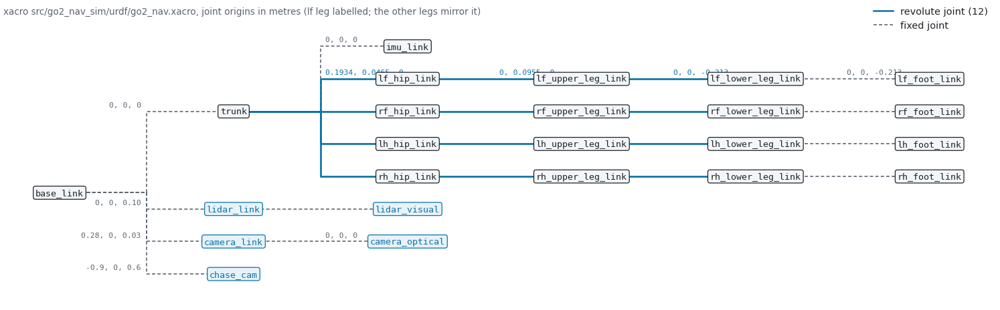
The expanded URDF as a tree, parsed from the xacro output by docs/img/c06-figures.py. Solid blue edges are the 12 revolute joints; dashed edges are fixed. Sensor links (blue boxes) come from sensors.xacro.
Task 2: Inspect the robot in RViz
2.1 Open the shared RViz config
Objective: see the URDF with no simulator running, using the config every later chapter uses.
src/go2_nav_sim/rviz/go2.rviz holds one set of displays for the whole course:
| Display | Topic | QoS set in the config | Why |
|---|---|---|---|
| RobotModel | /robot_description |
Reliable, Transient Local | robot_state_publisher publishes it once, Transient Local |
| TF | /tf, /tf_static |
every frame with its name | |
| LaserScan | /scan |
Best Effort | the publisher, pointcloud_to_laserscan, is Best Effort; a Reliable display receives nothing |
| LidarPoints (PointCloud2) | /lidar/points |
Best Effort | drops old clouds instead of queueing them |
| Map | /map |
Reliable, Transient Local | map_server publishes the map once, Transient Local |
| GlobalCostmap, LocalCostmap | /global_costmap/costmap, /local_costmap/costmap |
Reliable, Transient Local | as published by Nav2 |
| Plan | /plan |
Reliable | global path, amber |
| Footprint | /local_costmap/published_footprint |
Reliable | the 0.33 m circle Nav2 plans with |
The QoS of each publisher was read with ros2 topic info <topic> -v on the running stack (started as in
chapter 10). The fixed frame is map, the camera orbits base_link, and the tool bar
has 2D Pose Estimate (/initialpose) and 2D Goal Pose (/goal_pose). RViz takes use_sim_time on its command line, not from
the config. Use one of these three commands:
| When | Command |
|---|---|
| URDF alone, no simulator (this chapter) | rviz2 -d src/go2_nav_sim/rviz/go2.rviz -f base_link |
sim.launch.py odom:=gt, no map (chapter 7, 8) |
rviz2 -d src/go2_nav_sim/rviz/go2.rviz -f odom --ros-args -p use_sim_time:=true |
| Localisation or Nav2 running (chapters 9, 10 and the projects) | rviz2 -d src/go2_nav_sim/rviz/go2.rviz --ros-args -p use_sim_time:=true |
After a build the same file is also at $(ros2 pkg prefix go2_nav_sim)/share/go2_nav_sim/rviz/go2.rviz. Displays whose topic
has no publisher yet show a warning and nothing else; that is expected in this chapter.
Start the robot description, a joint slider window and RViz, each in its own terminal:
ros2 run robot_state_publisher robot_state_publisher --ros-args -p robot_description:="$(xacro src/go2_nav_sim/urdf/go2_nav.xacro)"
ros2 run joint_state_publisher_gui joint_state_publisher_gui
rviz2 -d src/go2_nav_sim/rviz/go2.rviz -f base_link
Expect got segment trunk and the other links in the first terminal, Centering in the second, and an RViz window with
Global Status: Ok:
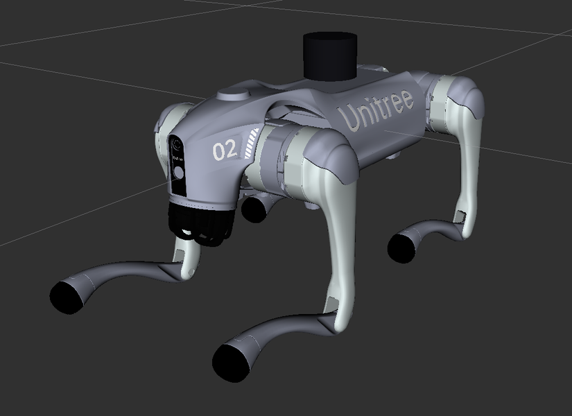
go2.rviz with fixed frame base_link and the TF display switched off. The lower legs point backwards because the slider
window starts every knee at the middle of its range (next sub-task).
Check: RobotModel has a blue tick in the Displays panel and the robot is drawn.
2.2 Read the TF tree on the model
Objective: match each frame you saw in chapter 5 to a place on the robot.
Tick the TF display (it is on in go2.rviz; the screenshot above had it off). Set the RobotModel Alpha to 0.35 to see the
frames through the meshes.
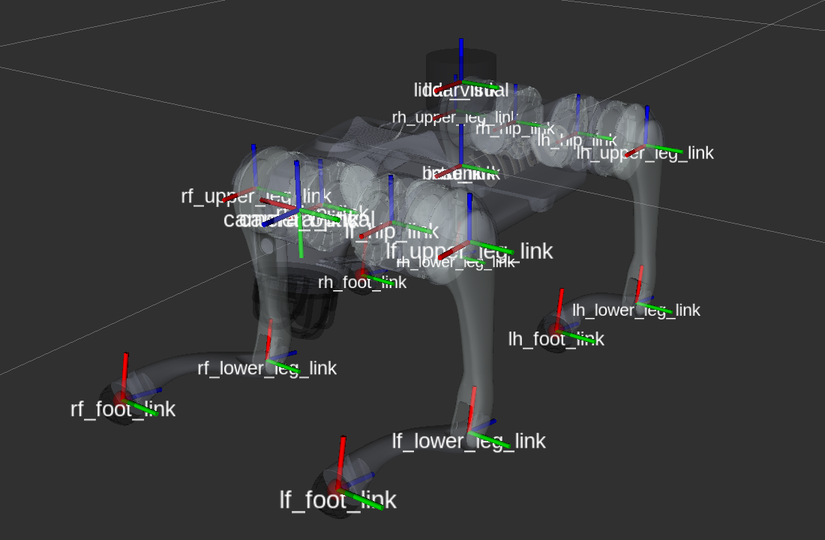
Every frame of the expanded URDF. Red is x, green y, blue z. At the feet x points up because the lower leg is rotated by -1.78 rad.
ros2 topic echo --once /joint_states --field name
['rf_hip_joint', 'rf_upper_leg_joint', 'rf_lower_leg_joint', 'lf_hip_joint', 'lf_upper_leg_joint', 'lf_lower_leg_joint', 'rh_hip_joint', 'rh_upper_leg_joint', 'rh_lower_leg_joint', 'lh_hip_joint', 'lh_upper_leg_joint', 'lh_lower_leg_joint']
Check: the Frames list under TF shows 24 frames, the 24 links of the URDF.
2.3 Move a leg and read its joint limits
Objective: see a joint move and find where its range comes from.
Read the limits of the left front leg from the expanded URDF:
for j in hip upper_leg lower_leg; do
xacro src/go2_nav_sim/urdf/go2_nav.xacro | grep -A6 "<joint name=\"lf_${j}_joint\" type" | grep limit
done
<limit effort="23.7" lower="-1.0472" upper="1.0472" velocity="30.1"/>
<limit effort="23.7" lower="-1.5708" upper="3.4907" velocity="30.1"/>
<limit effort="35.55" lower="-2.7227" upper="-0.83776" velocity="20.06"/>
The knee range, -2.7227 to -0.83776 rad, does not contain zero, so joint_state_publisher_gui starts it at the middle of the
range:
ros2 topic echo --once /joint_states --field position
array('d', [0.0, -0.00021654999999998203, -1.78023, 0.0, -0.00021654999999998203, -1.78023, 0.0, -0.00021654999999998203, -1.78023, 0.0, -0.00021654999999998203, -1.78023])
Drag the lf_hip_joint, lf_upper_leg_joint and lf_lower_leg_joint sliders. Each slider runs exactly over the joint's
limit. To reproduce the picture below, close the slider window and start it with set values instead:
ros2 run joint_state_publisher_gui joint_state_publisher_gui --ros-args \
-p zeros.lf_hip_joint:=0.6 -p zeros.lf_upper_leg_joint:=0.5 -p zeros.lf_lower_leg_joint:=-0.83776
/joint_states then carried 0.59983616, 0.4998596500000001 and -0.8377599999999998 for the three left front joints (the
slider rounds to its step).
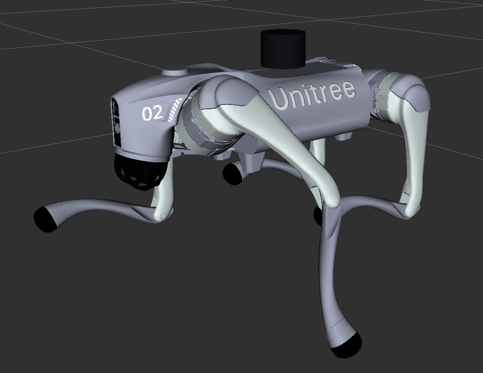
Left front leg at hip 0.6, upper leg 0.5 and knee -0.838 rad, the knee's upper limit; the other three legs are at the slider defaults.
Check: the lf_lower_leg_joint slider stops at -0.84 and cannot straighten the knee further.
Common mistakes:
- A slider window left over from an earlier try keeps publishing. Here, after one was stopped with
kill(SIGTERM) it kept running, andros2 topic info /joint_states --no-daemonshowedPublisher count: 2. Close the window or press Ctrl-C in its terminal, then check forPublisher count: 1.
Task 3: Compare visual and collision geometry
3.1 Switch RViz to the collision shapes
Objective: see the shapes Gazebo's physics uses.
In the RobotModel display, untick Visual Enabled and tick Collision Enabled.
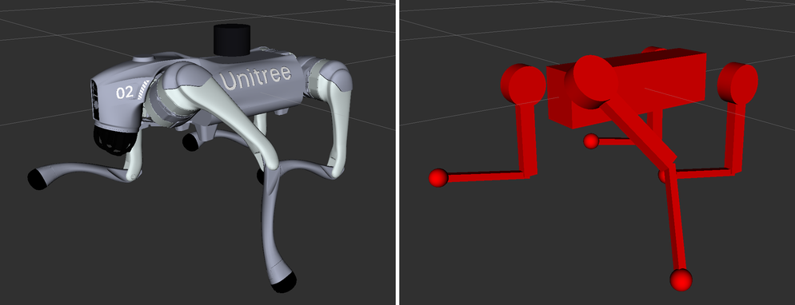
The same pose, visual meshes (left) and collision shapes (right). The curved calf mesh is a straight 0.213 m box for the physics; the lidar cylinder on top has no collision shape at all.
Check: the trunk is one box and each foot a sphere.
3.2 Count the shapes in the URDF
Objective: confirm the picture from the file.
python3 - <<'EOF'
import collections, subprocess, xml.etree.ElementTree as ET
urdf = ET.fromstring(subprocess.run(['xacro', 'src/go2_nav_sim/urdf/go2_nav.xacro'], capture_output=True, text=True).stdout)
for tag in ('visual', 'collision'):
shapes = collections.Counter(g[0].tag for link in urdf.iter('link') for e in link.findall(tag) for g in e.findall('geometry'))
print(tag, sum(shapes.values()), dict(shapes))
EOF
visual 20 {'box': 2, 'mesh': 13, 'sphere': 4, 'cylinder': 1}
collision 18 {'box': 10, 'cylinder': 4, 'sphere': 4}
The 18 collision shapes are the trunk box, the imu_link box, a 0.046 m radius cylinder per hip, a box per thigh and calf, and
a 0.02 m sphere per foot. base_link, the lidar and the cameras have visuals or nothing; Gazebo cannot collide with them. The ground contact is the four 0.02 m spheres with friction 0.6.
Check: collision 18.
Task 4: Add a sensor link
4.1 Copy the xacro and add a link
Objective: add a frame without touching the robot that the simulator uses.
mkdir -p docs/exercises
cp src/go2_nav_sim/urdf/go2_nav.xacro docs/exercises/go2_extra.xacro
Paste this into docs/exercises/go2_extra.xacro, just above </robot>:
<link name="rear_cam_link">
<visual><geometry><box size="0.02 0.06 0.03"/></geometry></visual>
</link>
<joint name="rear_cam_joint" type="fixed">
<parent link="base_link"/>
<child link="rear_cam_link"/>
<origin xyz="-0.25 0 0.06" rpy="0 0 3.14159"/>
</joint>
The include paths in the copy use $(find ...), so the copy works from any folder.
grep -c rear_cam docs/exercises/go2_extra.xacro
tail -n 1 docs/exercises/go2_extra.xacro
3
</robot>
Check: 3 (the link name, the joint name and the joint's child) and </robot> still on the last line.
4.2 Check that it parses
Objective: catch a typo before a node does.
xacro docs/exercises/go2_extra.xacro | check_urdf /dev/stdin | grep -E "root Link|rear"
root Link: base_link has 5 child(ren)
child(5): rear_cam_link
Check: five children of base_link instead of the four in Task 1.3.
4.3 Confirm the frame in view_frames
Objective: see the new frame in the TF tree that other nodes will use.
Stop the robot_state_publisher from Task 2 and start it on the copy. Keep the slider window and RViz running.
ros2 run robot_state_publisher robot_state_publisher --ros-args -p robot_description:="$(xacro docs/exercises/go2_extra.xacro)"
In another terminal:
ros2 run tf2_tools view_frames 2>&1 | grep "Generating graph"
grep -o '"base_link" -> "rear_cam_link"' frames_*.gv
ros2 run tf2_ros tf2_echo base_link rear_cam_link
[INFO] [...] [view_frames]: Generating graph in frames.pdf file...
"base_link" -> "rear_cam_link"
At time 0.0
- Translation: [-0.250, 0.000, 0.060]
- Rotation: in Quaternion (xyzw) [0.000, 0.000, 1.000, 0.000]
- Rotation: in RPY (radian) [0.000, -0.000, 3.142]
- Rotation: in RPY (degree) [0.000, -0.000, 180.000]
frames_<date>.pdf shows rear_cam_link under base_link, published by default_authority (the static broadcaster) with
"Most recent transform: 0.0": fixed joints go to /tf_static once. The moving leg frames update at about 10 Hz (10.187 and
10.203 Hz in two runs), the slider window's rate. tf2_echo may print Invalid frame ID "base_link" once before the first transform arrives.
Check: the .gv line exists and the translation is (-0.25, 0, 0.06). The new link also appears in RViz as a small box at the
rear. The simulator still uses go2_nav.xacro and is unchanged.
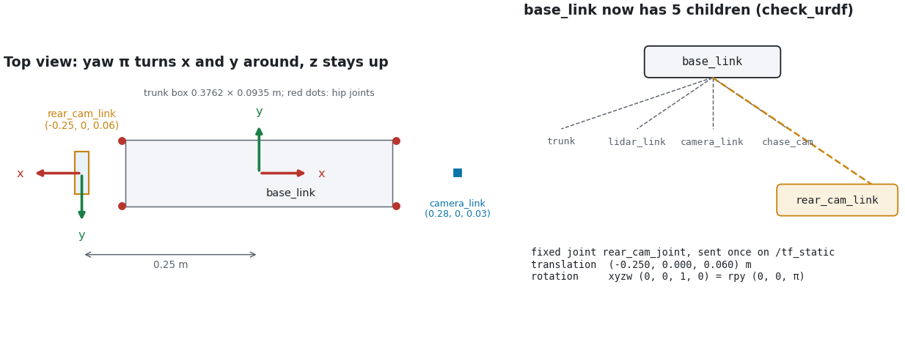
The link from Task 4.1 drawn at its offset. The yaw of π flips x and y, which is the quaternion (0, 0, 1, 0) that tf2_echo printed.
Task 5: Check the names that must match
5.1 Read the ros2_control configuration
Objective: know which names the controllers expect.
The leg macro emits one <ros2_control> block per leg:
<ros2_control name="${name}" type="system">
<hardware><plugin>gazebo_ros2_control/GazeboSystem</plugin></hardware>
<joint name="${name}_hip_joint">
<command_interface name="effort"/>
<state_interface name="position"/>
<state_interface name="velocity"/>
</joint>
...
ros_control.yaml sets update_rate: 250 and declares two controllers:
joint_states_controller(joint_state_broadcaster/JointStateBroadcaster) publishes/joint_statesfrom the position and velocity state interfaces.joint_group_effort_controller(joint_trajectory_controller/JointTrajectoryController) claims the 12 effort command interfaces. Every joint has the gainsp: 100.0, i: 0.2, d: 1.0, i_clamp: 2.5. CHAMP sends it position targets and the controller turns the position error into torque.
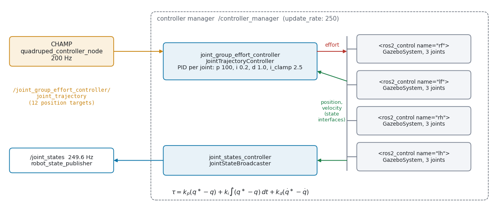
One controller manager, two controllers, four hardware blocks (one per <ros2_control> leg). The PID gains are the per-joint values from ros_control.yaml; the 249.6 Hz is the /joint_states rate measured in chapter 7.
An identical copy of the file sits in go2_config/config/ros_control/. Only the one named in gazebo.xacro is read; the
ros_control_file launch argument of champ_gazebo is declared but never used.
Check: grep -c "p: 100.0" src/third_party/unitree-go2-ros2/robots/descriptions/go2_description/config/ros_control/ros_control.yaml prints 12.
5.2 Read how CHAMP finds the legs
Objective: know which names CHAMP looks up and what it reads from them.
CHAMP does not parse joint names out of the URDF. It reads two maps. joints.yaml lists four joints per leg, in the order
left_front, right_front, left_hind, right_hind:
joints_map:
left_front:
- lf_hip_joint
- lf_upper_leg_joint
- lf_lower_leg_joint
- lf_foot_joint
Only the first three names per leg are used; they become the joint order of the trajectory CHAMP publishes. links.yaml gives
base: base_link and four links per leg (lf_hip_link, lf_upper_leg_link, lf_lower_leg_link, lf_foot_link).
urdf_loader.h computes the translation between consecutive links, starting from the URDF root, and builds its leg model from
those offsets. It does not read joint axes or limits. gait.yaml sets knee_orientation: ">>": the first character is for the
front legs, the second for the hind legs, and it selects the inverse kinematics solution.
grep -A4 left_front src/third_party/unitree-go2-ros2/robots/configs/go2_config/config/joints/joints.yaml
grep -A4 left_front src/third_party/unitree-go2-ros2/robots/configs/go2_config/config/links/links.yaml
left_front:
- lf_hip_joint
- lf_upper_leg_joint
- lf_lower_leg_joint
- lf_foot_joint
left_front:
- lf_hip_link
- lf_upper_leg_link
- lf_lower_leg_link
- lf_foot_link
Check: lf_hip_joint comes first in the joint map, and every name in the link map is a link you saw in RViz in Task 2.2.
| Name list | Must match | Read by |
|---|---|---|
links.yaml (base and 16 leg links) |
link names in the URDF | CHAMP, at start |
joints.yaml (first three per leg) |
joint names in ros_control.yaml |
the trajectory controller, on every message from CHAMP |
ros_control.yaml joints and gains |
revolute joint names in the URDF, the <ros2_control> blocks |
gazebo_ros2_control |
controller names joint_states_controller, joint_group_effort_controller |
ros_control.yaml |
champ_gazebo spawners, sim.launch.py |
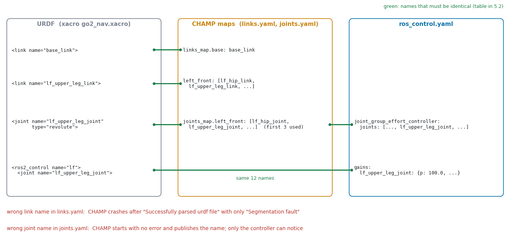
The table above with one example name per row. A wrong link name crashes CHAMP; a wrong joint name passes CHAMP silently (Task 5.3).
5.3 Check that all names agree
Objective: run one check that compares every list in the table.
python3 - <<'EOF'
import subprocess, yaml, xml.etree.ElementTree as ET
R = 'src/third_party/unitree-go2-ros2/robots/'
load = lambda f: yaml.safe_load(open(R + f))
urdf = ET.fromstring(subprocess.run(['xacro', 'src/go2_nav_sim/urdf/go2_nav.xacro'], capture_output=True, text=True).stdout)
links = {l.get('name') for l in urdf.iter('link')}
revolute = {j.get('name') for j in urdf.iter('joint') if j.get('type') == 'revolute'}
jmap = load('configs/go2_config/config/joints/joints.yaml')['/**']['ros__parameters']['joints_map']
lmap = load('configs/go2_config/config/links/links.yaml')['/**']['ros__parameters']['links_map']
ctrl = load('descriptions/go2_description/config/ros_control/ros_control.yaml')['joint_group_effort_controller']['ros__parameters']
champ_joints = {n for leg in jmap.values() for n in leg[:3]}
champ_links = {lmap['base']} | {n for k, leg in lmap.items() if k != 'base' for n in leg}
print('CHAMP joints not revolute in URDF:', sorted(champ_joints - revolute))
print('CHAMP links not in URDF: ', sorted(champ_links - links))
print('controller joints not revolute: ', sorted(set(ctrl['joints']) - revolute))
print('revolute joints without a gain: ', sorted(revolute - set(ctrl['gains'])))
EOF
CHAMP joints not revolute in URDF: []
CHAMP links not in URDF: []
controller joints not revolute: []
revolute joints without a gain: []
Check: four empty lists.
Common mistakes, both reproduced by starting quadruped_controller_node alone with a copy of one map that had a single name
changed:
- A wrong link name (
lf_thigh_linkforlf_upper_leg_link) crashes CHAMP right afterSuccessfully parsed urdf file, with only[ros2run]: Segmentation fault. No message names the link. - A wrong joint name (
lf_thigh_joint) starts without any error. CHAMP publishes it unchanged injoint_namesof every trajectory message, so the mismatch only shows up at the controller, which knows no joint of that name. The controller's reaction was not tested here.
5.4 Adapt this to your own quadruped
Objective: the checklist for replacing the Go2 with another robot. Run 5.3 on your files at the end.
- Write a xacro whose root is
base_linkand which has three revolute joints per leg with the hip on x and the thigh and knee on y, plus a fixed foot link at the contact point. CHAMP's leg model (quadruped_leg.h,kinematics.h) hard-codes these axes. Give every link a collision shape, a mass and an inertia. - Add one
<ros2_control>block per leg withgazebo_ros2_control/GazeboSystem, aneffortcommand interface andpositionandvelocitystate interfaces per joint. - Add the
libgazebo_ros2_control.soplugin, pointing at your controller YAML, and an IMU publishing/imu/data. - In the controller YAML, list the same 12 joint names under
joint_group_effort_controller.jointsand give each a gain entry. Keep the controller names:champ_gazebospawns them by name, andsim.launch.pysends CHAMP's output tojoint_group_effort_controller/joint_trajectory. - Write
joints.yamlandlinks.yamlwith your joint and link names underleft_front,right_front,left_hind,right_hind, andlinks_map.baseequal to your root link. The loader looks the links up by name in the URDF, so they must match exactly. - Write
gait.yaml: setnominal_heightbelow the standing height your legs can reach,knee_orientationto match your knees, and the velocity limits to what the robot can follow. - Point
description_path,joints_map_path,links_map_pathandgait_config_pathinsim.launch.pyat your files, and setworld_init_za few centimetres above the standing height so the robot drops onto its feet.
Step 1 is the one CHAMP does not check for you. Run it on the Go2 first to see what a correct answer looks like:
xacro src/go2_nav_sim/urdf/go2_nav.xacro | grep -A6 'type="revolute"' | grep -o 'axis xyz="[^"]*"' | sort | uniq -c
8 axis xyz="0 1 0"
4 axis xyz="1 0 0"
Check: on your own xacro the same command prints 4 joints on 1 0 0 (the hips) and 8 on 0 1 0, and the Task 5.3 script
prints four empty lists.
Task 6: Follow the robot into Gazebo
6.1 Read how this repository wraps upstream
Objective: know which launch file passes which path.
grep -n "xacro = \|_path'" src/go2_nav_sim/launch/sim.launch.py
17: xacro = f"{os.path.join(me, 'urdf/go2_nav.xacro')} start_x:={START_X} start_y:={START_Y}"
22: 'description_path': xacro,
23: 'joints_map_path': os.path.join(cfg, 'config/joints/joints.yaml'),
24: 'links_map_path': os.path.join(cfg, 'config/links/links.yaml'),
25: 'gait_config_path': os.path.join(cfg, 'config/gait/gait.yaml'),
34: 'use_sim_time': 'true', 'robot_name': 'go2', 'lite': 'false', 'description_path': xacro,
sim.launch.py passes the xacro path, with start_x:=-4.5 start_y:=-3.5 appended, as description_path to both CHAMP launch
files, together with the three go2_config YAML files. Each node that needs the URDF runs xacro itself. The upstream
description files are not edited, so updating the pin means changing SHA in setup.sh and checking that the patch still
applies.
Check: description_path appears twice (lines 22 and 34), once per CHAMP launch file, and the three map and gait paths once.
6.2 Follow the spawn and the controller start-up
Objective: know what has to happen before the legs take commands.
robot_state_publisherpublishes the URDF on/robot_description.gzserverstarts with the arena world and thegazebo_rosinit and factory plugins.spawn_entity.py -entity go2 -topic /robot_description -x -4.5 -y -3.5 -z 0.275 -Y 0.0inserts the robot 0.275 m above the floor at marker A. It drops onto its feet.- The
gazebo_ros2_controlplugin inside the model fetches the URDF fromrobot_state_publisher, creates the four leg systems and starts a controller manager at/controller_manager. - Two
controller_managerspawner nodes load and activatejoint_states_controllerandjoint_group_effort_controller.
Upstream used ros2 control load_controller for step 5. That command comes from ros2controlcli, which is not installed here,
and without it the legs never receive a command. The patch replaces both calls with the spawner node. The launch output of one
start, shortened:
[spawn_entity]: Spawn status: SpawnEntity: Successfully spawned entity [go2]
[gazebo_ros2_control]: Parameter 'hold_joints' has already been declared, ...
[spawner_joint_group_effort_controller]: Configured and activated joint_group_effort_controller
[spawner_joint_states_controller]: Configured and activated joint_states_controller
The hold_joints error appears three times, once for each <ros2_control> block after the first, and the controllers start
normally after it.
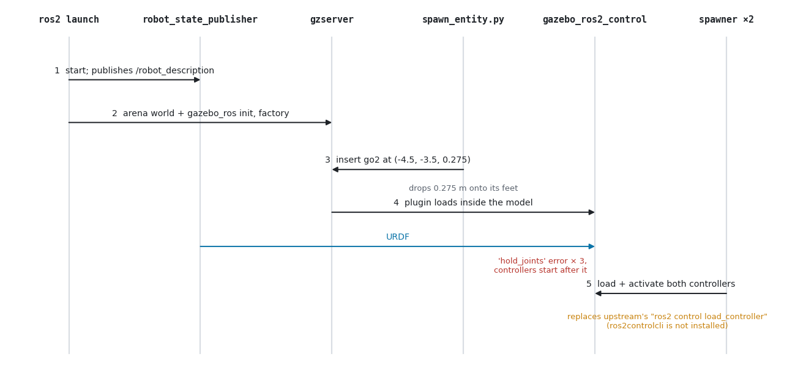
The five start-up steps above in time order. The URDF reaches the plugin from robot_state_publisher; the spawners are this repository's patch.
Check: both Configured and activated lines appear when you start the simulator in chapter 7, Task 1.
Exercise
In your copy docs/exercises/go2_extra.xacro, add a range sensor frame tof_link 0.30 m in front of base_link and 0.05 m
below it, tilted 0.5 rad nose-down. What does tf2_echo base_link tof_link print?
Answer: the joint is
<link name="tof_link"/>
<joint name="tof_joint" type="fixed">
<parent link="base_link"/>
<child link="tof_link"/>
<origin xyz="0.30 0 -0.05" rpy="0 0.5 0"/>
</joint>
A positive pitch about y turns +x downwards (REP-103, right hand). With robot_state_publisher on the copy, tf2_echo printed:
- Translation: [0.300, 0.000, -0.050]
- Rotation: in Quaternion (xyzw) [0.000, 0.247, 0.000, 0.969]
- Rotation: in RPY (radian) [0.000, 0.500, 0.000]
- Rotation: in RPY (degree) [0.000, 28.648, 0.000]
Further reading
- ROS 2 documentation,
URDF/Building-a-Visual-Robot-Model-with-URDF-from-Scratch.rst(humble branch ofros2/ros2_documentation). - Articulated Robotics tutorials: https://articulatedrobotics.xyz/tutorials/
Source: docs/06-import-the-go2.md